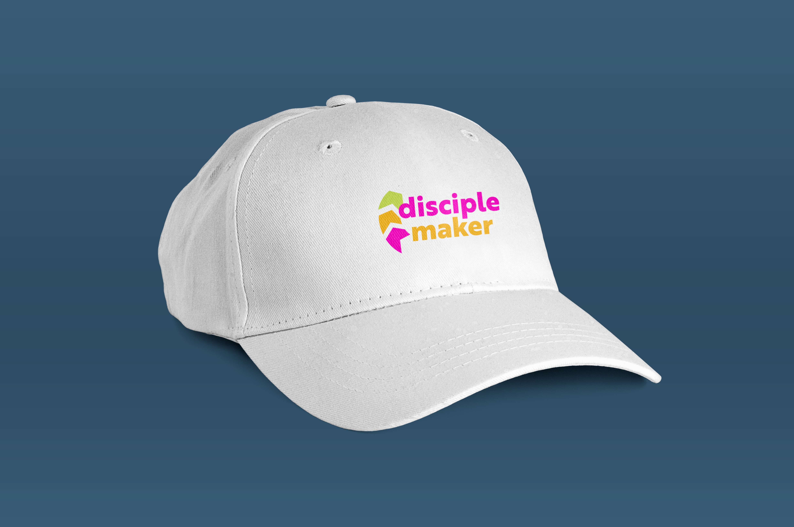
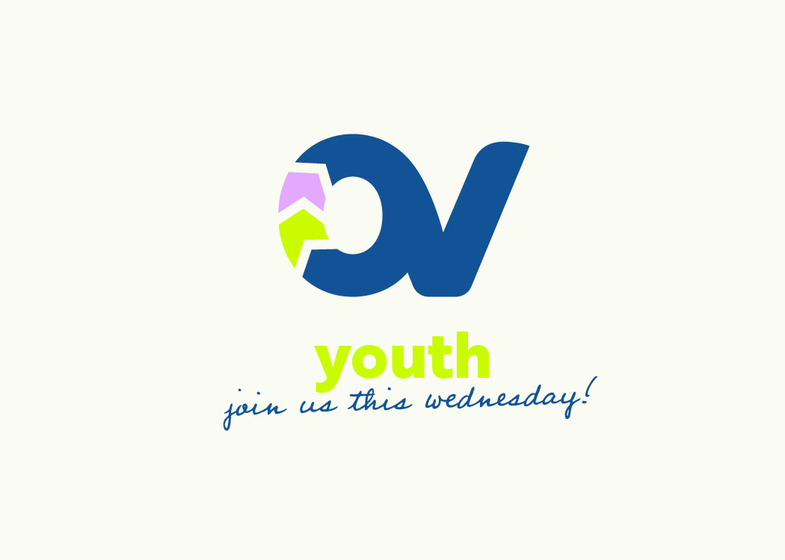

As the designer for this rebrand, I guided a transformation from a cliché heavy logo, to a welcoming, modern brand that speaks to families, students, and the surrounding community.

OVC's old logo.

New logo.




